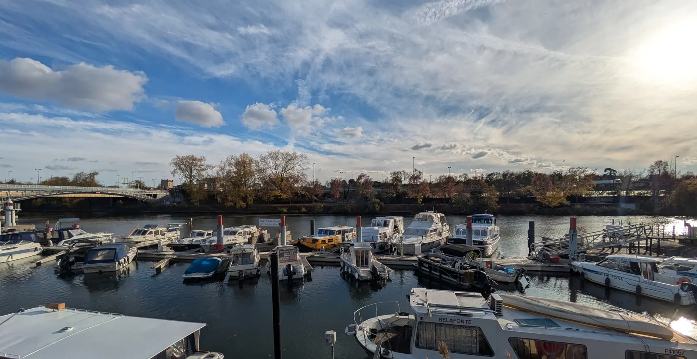
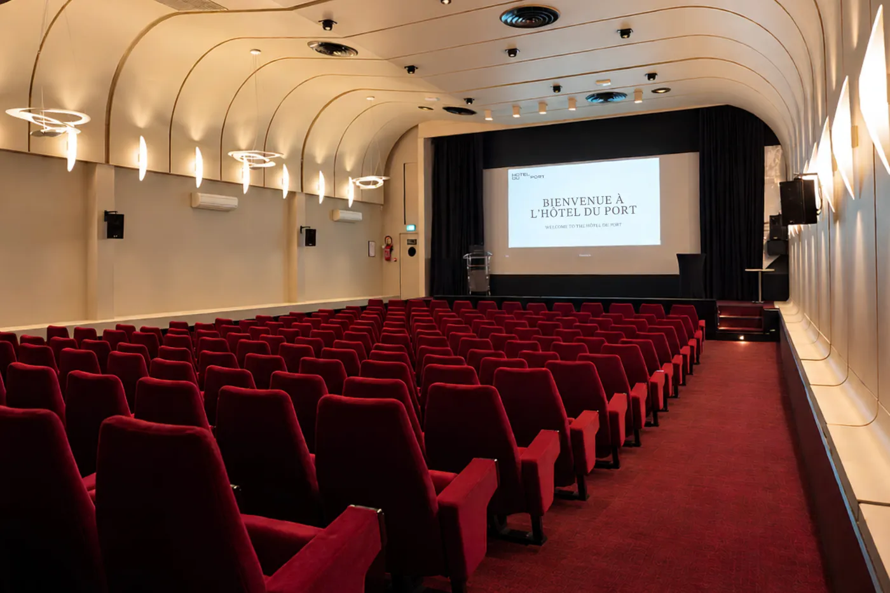
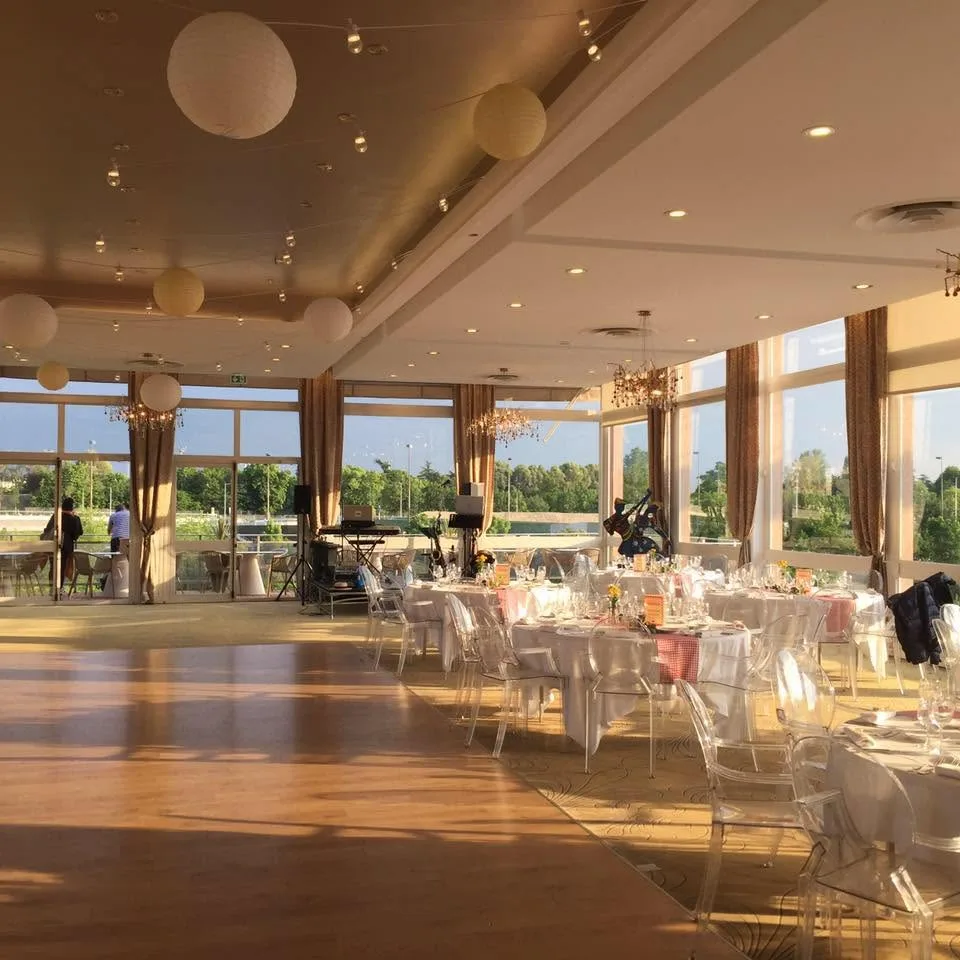
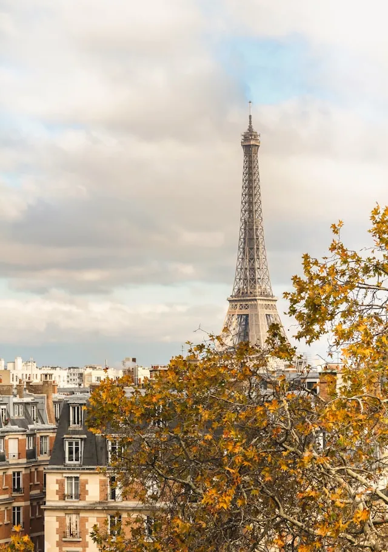
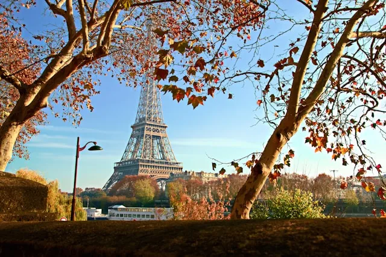
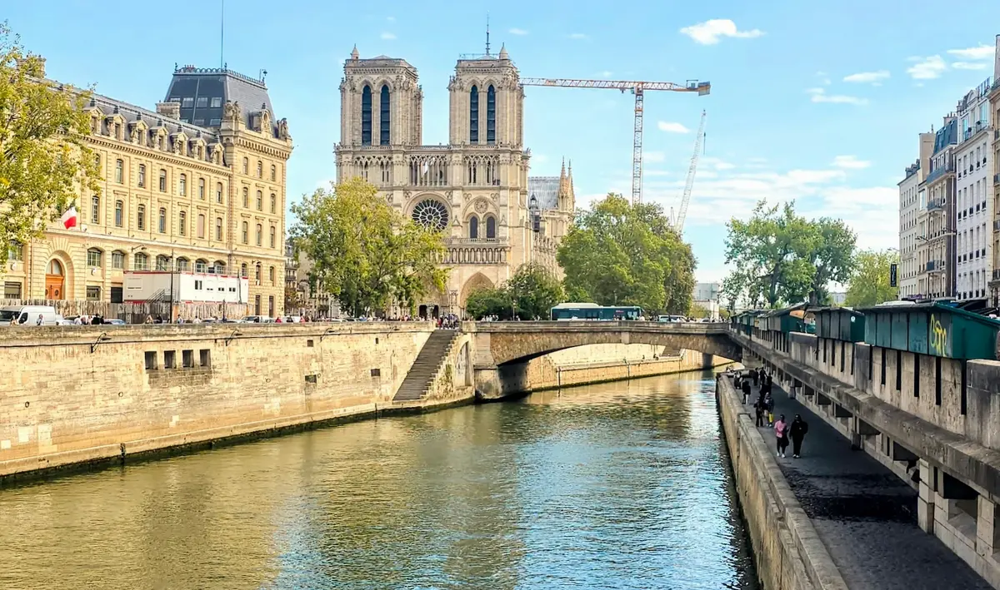

Due to a student blockade of the Jussieu campus, Compute! has moved from the CICSU to the Hôtel du Port in Nogent-sur-Marne. Same dates, same program, and your ticket remains valid.



The Hôtel du Port sits right on the Marne in Nogent-sur-Marne, next to a little yacht harbor and the Bois de Vincennes, in Paris East.
Talks take place in a plush-seat amphitheater, and three bright rooms with a view of the water host the tracks and birds-of-a-feather sessions. Sponsor booths are in the panorama room overlooking the river and the harbor, where lunch, breaks and general hangout also happen.
The venue is compact, so for two days speakers, maintainers, users and sponsors are all under one roof. Every coffee break is a chance to find the person you came to meet.
November is a great time to be in Paris. The summer crowds are gone, the cultural calendar is full, and the city is easier to move around. Temperatures are mild, and rain adds a sparkly touch to cobblestones and cozy cafés.
Nogent-sur-Marne sits in Paris East, by the Bois de Vincennes, and has long been loved by Parisians for its guinguettes and walks along the Marne. The RER takes you straight to Châtelet in 13 minutes, so the rest of the city is never far away.



Photos by Jace Afsoon, Paolo Silvestri, and Is@ Chessyca on Unsplash.
By train: London in 2h15, Brussels in 1h22, Amsterdam in 3h20, Frankfurt in 4 hours.
Trains also run from Munich, Berlin and Barcelona. There is no excuse not to come!
For questions about accessibility or additional accommodations, please contact us.